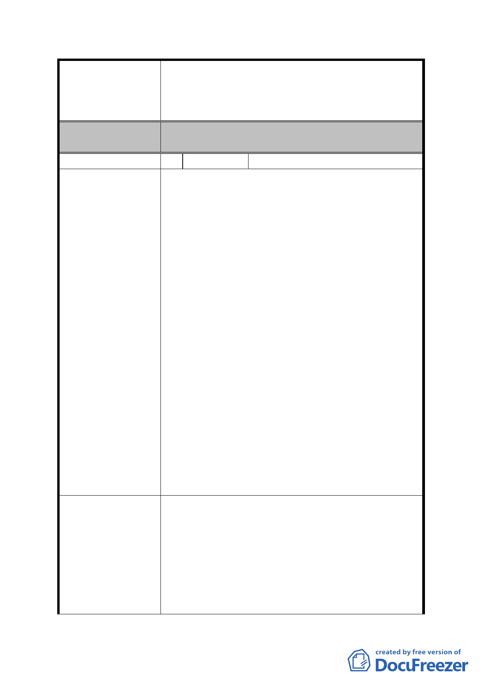

案名
委員會決議
編號
陳情理由
建議辦法
擬定臺北市內湖區蘆洲里附近工業區細部計畫暨變
更第 2 種工業區為科技工業區 B 區(特)、科技工業
區 B 區、道路用地、護坡用地及變更工業區(供輕工
業使用)為科技工業區 A 區(特)計畫案
該陳情位置已公告發布實施都市計畫案，非屬本計
畫案市地重劃範圍。
2 陳情人
黃台生
陳情訴求：
1. 住宅區容積率由 200%放寬至 300%。
2. 土地發放比例應依土地公告現值，不應依照貴委
員會同等比例 55%。
3. 退還重劃前繳納之地價稅。
事實:
本人持有潭美段一小段 395 地號及 382 地號，目前
使用分區為工二容積率為 200%，日前都發局擬變
更土地使用分區案為住宅區容積率為 200%。
本人持有土地公告現值約為 63000 元/平方公尺，但
鄰近部分土地之公告現值約為 34000 元/平方公
尺，
本人民國 71 年持有土地，至今已繳納地價稅逾 27
年。
理由:
以目前都發局擬實施重劃開發，依其計劃將擬變更
臺北市內湖區蘆洲里部分工業區改為住宅區以及
科工 A 區，本重劃案 98 年 11 月 24 日細部計畫公
告之容積率為 200%，科工 A 為 364%，兩者容積率
差異過大，本人認為該地段環境，住宅區以及科
工 A 區價值無顯著差異，住宅區容積率應放寬為
300%，實屬合理。
說明:
以土地面積 100 坪為例，土地重劃完畢，所有權人
平均發還土地約 55%。
(1)例一:科工 A 區之容積率為 364%，則所有權人分
配所得之容積坪數為 200.2 坪(100*55%*3.64)，
預估工業區房屋售價為每坪 30 萬元，則 200.2
坪之房屋價值約計為 6006 萬元(200.2*30 萬)。
(2)例二：住宅區之容積率為 200%，則所有權人分配
- 27 -